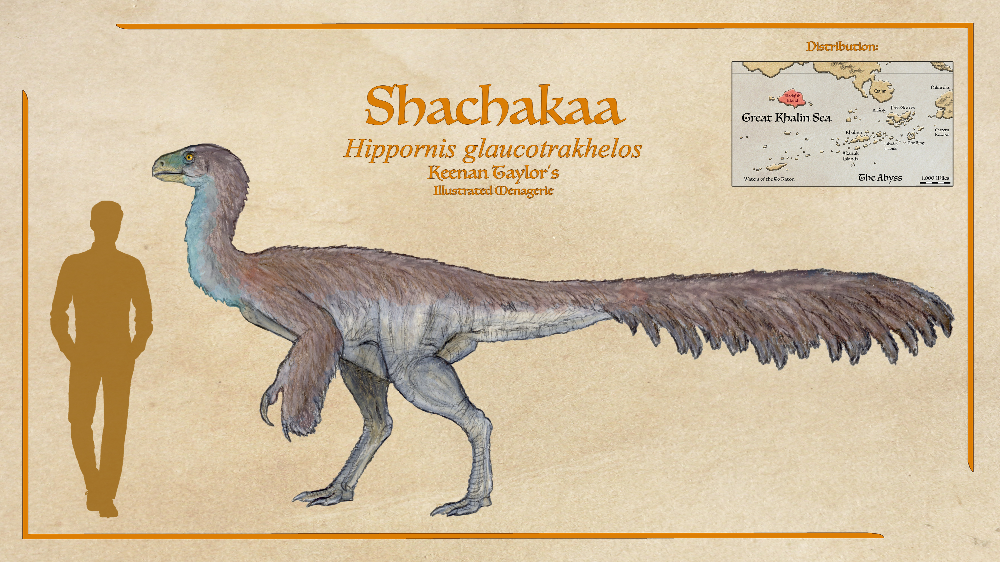
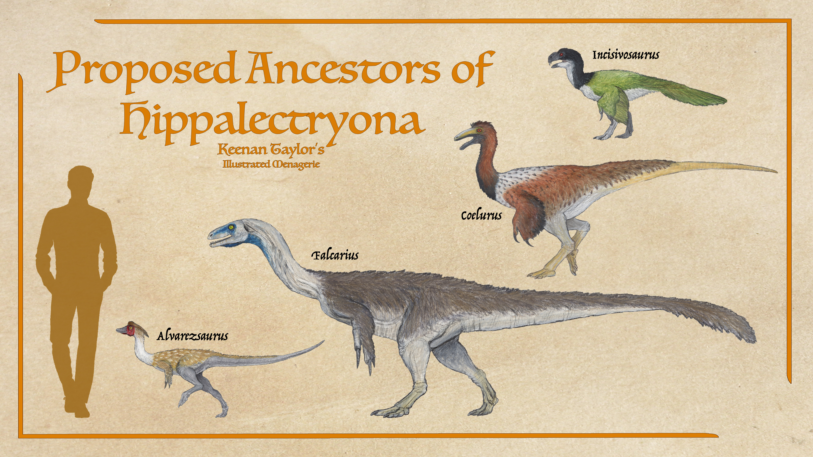

Scientific Classification
| Kingdom | Animalia | Animalia | Animalia |
|---|---|---|---|
| Phylum | Chordata | Animalia | Animalia |
| Clade | Archosauria | Animalia | Animalia |
| Clade | Avemetatarsalia | Animalia | Animalia |
| Clade | Dinosauria | Animalia | Animalia |
| Clade | Saurischia | Animalia | Animalia |
| Clade | Theropoda | Animalia | Animalia |
| Clade | Coelurosauria | Animalia | Animalia |
| Family | Hippalectryona | Animalia | Animalia |
Taxonomic note: Hippoalectryona are generally accepted as a monophyletic lineage within Coelurosauria, although their precise position within that larger clade remains unresolved. Their taxonomic difficulty is unusual even among the more problematic groups of Kaimeran dinosaurs. Hippoalectryons possess a combination of anatomical characteristics that have encouraged comparisons with several familiar coelurosaurian lineages, yet none of these comparisons has provided a sufficiently secure basis for assigning them to an established group.
01 · INTRODUCTION
Overview
The Hippoalectryona are an endemic radiation of coelurosaurian theropods whose evolutionary history is closely associated with the unusual biogeography of Kaimere. They are among the most taxonomically problematic major theropod groups known from the planet. Although their coelurosaurian affinities are generally accepted, their precise position within Coelurosauria remains unresolved. Their anatomy combines features that have variously been interpreted as evidence of relationships with oviraptorosaurs, therizinosaurs, ornithomimosaurs, alvarezsaurians, and other early-diverging coelurosaurian lineages. The extent to which these resemblances reflect genuine ancestry, convergent evolution, or the retention of primitive characteristics remains uncertain.
The radiation is particularly notable for its ecological and morphological breadth. Its members range from comparatively small island species weighing only a few kilograms to the enormous ketlrek which reaches approximately four to seven tons and represents the largest terrestrial predator of Kaishel. Between these extremes occur terrestrial omnivores, herbivores, large generalist browsers, forest-dwelling predators, and formidable open-country hunters. Such diversity demonstrates the considerable evolutionary potential of an early-diverging coelurosaurian lineage isolated within Kaimere's distinctive ecosystems.
Despite their ecological differences, hippoalectryons share a recognizable anatomical foundation. They are generally deep-bodied, heavily muscled theropods with substantial forelimbs, powerful claws, and long tails. Their skulls are proportionally large in comparison with those of many cursorial theropods. In the larger and more derived members, the jaws terminate in a keratinous beak rather than a conventional tooth-bearing rostrum. This beak is among the group's most distinctive adaptations and has undergone considerable modification in association with different feeding strategies.
The u'ruek illustrates the more generalized condition. Its skull is comparatively lightweight, with a narrow, pointed rostrum and a deep but relatively lightly constructed cranium. The beak is suited to cropping vegetation, manipulating food, and seizing small animals. Its omnivorous diet reflects the versatility of this arrangement: although fruit, seeds, nuts, and other plant material are preferred when available, u'ruekil also consume foliage, wetland vegetation, carrion, and small prey. The ketlrek, in contrast, possesses a much more heavily reinforced skull, with a broad head, short and deep rostrum, and strongly hooked beak. Its cranial apparatus is adapted for gripping, hooking, and tearing resistant prey. The differences between these animals are therefore not simply consequences of body size, but represent substantial functional divergence within the same broader radiation.
The Hippoalectryona are especially significant in the study of Kaimere's endemic fauna because their diversity occurs across several distinct landmasses and island systems. Kaishel supports some of the group's most imposing representatives, including the ketlrek, while Pakardia retains the enormous u'ruek as one of the few surviving examples of its pre-interchange megafauna. Smaller members occur throughout the Khalin Islands, and other forms are known or suspected from neighboring islands. Their distribution reflects both the ancient establishment of the lineage on Kaimere and the subsequent isolation, interchange, and ecological turnover that have shaped the planet's regional faunas.
The available evidence is uneven. In particular, the fossil record of the early lineage is exceptionally poor, while the study of Pakardian fauna is complicated by cultural restrictions on the removal of specimens. The Pakardiant regard the dead as returning to the island's soil through the cycle of reincarnation and are consequently reluctant to permit native remains to leave Pakardia. Although the Assembly has generally maintained favorable relations with the island's inhabitants, this restriction has limited the independent examination and comparative verification of many reported discoveries. As a result, several aspects of hippoalectryon evolution remain dependent upon incomplete fossil material, observations of living animals, and interpretations that cannot yet be tested comprehensively.
02 · DEEP TIME
Evolutionary History
Late Jurassic or Earlier: Divergence of the Ancestral Lineage
The evolutionary history of Hippoalectryona begins with an exceptionally early divergence within Coelurosauria. The ancestral lineage probably separated from other coelurosaurian branches during the Late Jurassic or earlier, before many of the anatomical characters used to distinguish the major later groups had become established. This early separation is central to understanding the taxonomic uncertainty surrounding the radiation.
The precise ancestry of the group is unknown. Its early divergence has allowed several competing hypotheses to remain viable, including relationships with the ancestral stocks of oviraptorosaurs, therizinosaurs, ornithomimosaurs, and alvarezsaurians. It is possible that the hippoalectryon lineage diverged close to the base of several of these groups, retaining an anatomical organization that later became independently modified along different evolutionary branches.
The ancestral animals were presumably less specialized than the great variety of descendants now known from Kaimere. However, the fossil record is too poor to reconstruct their precise appearance, ecology, or geographic distribution. No reliable sequence of transitional forms currently connects the earliest hypothetical ancestors with the derived hippoalectryons of the present day.
Jurassic: Introduction to Kaimere
The ancestral lineage is generally thought to have reached Kaimere during the Jurassic, probably through the Portal. This hypothesis is consistent with the broader history of introduced terrestrial vertebrates on the planet, although the precise circumstances and timing of the hippoalectryons' arrival have not been established.
The introduced population would have represented only one early branch of a much older coelurosaurian history. Once established, its descendants became isolated from the evolutionary developments occurring among their closest relatives on Earth. This separation provided the conditions for the eventual emergence of a distinct Kaimeran radiation.
The earliest stages of this establishment remain poorly documented. The fossil record does not provide a continuous account of the lineage's arrival, initial spread, or earliest diversification. There is consequently no secure means of determining when the characteristic beaked skull, deep-bodied trunk, and substantial forelimbs became established within the group. These features may have developed gradually across several early branches rather than appearing together in a single ancestral form.
Subsequent Mesozoic and Early Cenozoic Diversification
Following its establishment on Kaimere, Hippoalectryona diversified into forms occupying a variety of ecological roles. The precise chronology of this radiation cannot presently be reconstructed, owing to the scarcity of early fossils. Nevertheless, the distribution of living and historically known species indicates that the lineage became established across multiple parts of the planet.
Kaishel developed a particularly diverse hippoalectryon fauna. Its representatives include large terrestrial forms, among them the ketlrek, which eventually became the continent's dominant terrestrial predator. Smaller members of the lineage also became established on the Khalin Islands, where geographic isolation provided opportunities for the evolution of distinct island forms. The degree of relationship between these island species and the larger Kaishel animals remains difficult to determine without a more complete fossil record.
The evolution of the beak appears to have been particularly important to the radiation's ecological expansion. In its more generalized form, the beak could accommodate a broad omnivorous diet, allowing animals to exploit seasonal plant resources while retaining the ability to capture small prey. In more specialized descendants, the same basic structure became modified for different feeding functions. The contrast between the u'ruek and ketlrek demonstrates how extensively this structure could be adapted without abandoning the group's characteristic cranial organization.
The evolution of large predatory forms represents one of the more remarkable outcomes of this diversification. The ketlrek became a very large, heavily constructed hunter adapted to the open coastal prairies and forest margins of Kaishel. At approximately four to seven tons, it is among the largest terrestrial predatory theropods of Kaimere. Its evolutionary success demonstrates that the beaked cranial structure, rather than limiting the group to herbivory or generalized omnivory, could be modified into a highly effective predatory apparatus.
Upheaval on Pakardia 1.5 Million Years Ago

Pakardia developed an isolated fauna containing several endemic animals whose ancestry predates the major interchange of approximately 1.5 million years ago. Although the island supports a considerable diversity of smaller native species, few of its large animals can confidently be traced to this earlier fauna. Many of the larger animals inhabiting Pakardia today arrived during or after the later interchange.
Among the surviving native megafauna, the u'ruek is particularly significant. It is a massive, feathered hippoalectryon that has become one of the most prominent animals of Pakardiant society. Large males stand well over two metres at the hips and may weigh nearly one and a half tons, while females are approximately half their size. The species is therefore among the largest known representatives of the Kaimeran radiation, though its body plan differs considerably from that of the predatory ketlrek.
Approximately 1.5 million years ago, Pakardia underwent a major environmental and ecological disruption. A dramatic reduction in Kaimere's axial tilt altered climatic conditions across the planet. The colder latitudes became colder, while warmer regions experienced increased heat. Pakardia, already located within a relatively vulnerable climatic region, became substantially colder.
The associated cooling also caused sea levels to fall as increasing quantities of water became trapped in the polar ice. The resulting exposure of land made passage between the mainland and Pakardia through Qadan considerably easier. For a limited period, animals that had previously been separated by marine barriers could move into the island's ecosystems.
The climatic disruption contributed to extinctions and helped trigger a Harvest, further increasing the number and variety of animals entering Pakardia. The combination of climatic change, mainland migrants, and harvested fauna produced an extraordinary ecological turnover. Many endemic animals disappeared, while newcomers rapidly established themselves in habitats that had previously been occupied by the island's native fauna.
The interchange was particularly consequential for the island's large animals. Although a few megafaunal species had arrived before the event, most of the large animals now associated with Pakardia appear to have established themselves around this period. Some earlier immigrants, including simiomorph sloths and numerous aimals, had reached the island before the interchange, but many of these lineages subsequently disappeared. The surviving native megafauna were consequently reduced to a comparatively small number of species.
The u'ruek was among the few large endemic animals to survive this upheaval. Its omnivorous diet, broad tolerance of plant foods, and ability to defend its young against predators likely contributed to its persistence. Its social structure also offered substantial advantages in an environment where unfamiliar predators and competitors had suddenly become abundant. A coordinated flock of large, aggressive adults represented a formidable obstacle to many of the smaller mammals that arrived during the interchange.
The species did not, however, remain unaffected by these changes. The altered predator community would have placed new pressures on its nesting behavior, juvenile survival, and use of the landscape. Its continued presence demonstrates the resilience of the lineage, but the wider loss of Pakardiant megafauna reflects the severity of the ecological transformation.
The reduction in axial tilt and the conditions associated with it were comparatively brief. Nevertheless, the resulting interchange had lasting consequences. Even after the climate and sea levels changed again, the new animals had already become established, while many of the endemic species that had once dominated Pakardia were extinct.
03 · SPECIES ACCOUNTS
Known Diversity
The following accounts document representative hippoalectryons recorded in the encyclopedia. Select a species to consult its individual natural history and descriptive account.
U'ruek

Equigallus teralectryon
The u'ruek is generally said by the indigenous peoples to be an enormous bird. The largest roosters stand well over two meters at the hips and can weigh just under one and a half. Hens are around half this size. They are generally classified as domesticated, both for riding and settlement defense, though wild u'ruekil are readily tamed and bred with domesticated stock, so their status as a domesticate is debatable. The u'ruek is an omnivore. Large fruit, cones, nuts, and other mast are their preferred food, though this is only available seasonally. Many trees shed seeds together once every few years, which is a boon when it comes but the irregularity prevents specialty. When seeds are not available, their preference wanes, and they take on just about any sapling, leaf, floating wetland vegetation, fern, or cycad. Though they prefer vegetation, they will peck at a carcass and readily hunt small game to be swallowed whole.
Read species article →Shachakaa

Hippornis glaucotrakhelos
There is a large feathery herbivore of some kind called the shachakaa. Probably a hippoalectryon of some sort, they were a common meat traded by the Ehyoke. She never claimed to see one alive, but what pictures are known from the more open eastern territories and seem to show an ostrich-sized bird with a long stiff tail. They are another possible contender for the fastest native animal, but in one failed hunt observed from sea, they weren't quite fast enough to outrun wild dogs in an open sprint, but still managed to fend them off.
Read species article →04 · CLASSIFICATION
Taxonomic Notes
Hippoalectryona is a useful taxonomic designation for a lineage whose internal coherence is considerably more secure than its precise position within Coelurosauria. Its members are consistently recognized as sharing a common evolutionary heritage, but the characters that would establish their relationship to other major coelurosaurian groups are either poorly preserved, insufficiently diagnostic, or complicated by the early divergence of the lineage.
The principal difficulty is the estimated antiquity of the ancestral hippoalectryons. Their lineage must have separated from other coelurosaurian branches very early, probably during the Late Jurassic or earlier. Consequently, the ancestral forms may predate many of the anatomical specializations that distinguish later, better-known coelurosaurian groups. Hippoalectryons may therefore retain primitive characters that subsequently became modified or lost in other lineages. Conversely, their later descendants may have independently evolved characteristics resembling those of several unrelated coelurosaur groups.

Several competing classifications have been proposed. One interpretation places Hippoalectryona among stem-oviraptorosaurs, with particular attention given to comparisons with early forms such as Inscivosaurus. Other hypotheses associate them with stem-therizinosaurs, drawing comparisons with Falcarius, or with early ornithomimosaurian and alvarezsaurian lineages. Comparisons have also been made with Coelurus and Alvarezsaurus, although these proposals differ substantially in their implications for the group's ancestry. None of these placements is presently secure.
The oviraptorosaur hypothesis has historically been particularly influential. Under this interpretation, the ancestors of the hippoalectryons were members of a very basal oviraptorosaurian lineage introduced to Kaimere, probably during the Jurassic. However, the anatomical evidence does not establish that the group belongs within Oviraptorosauria in the narrower sense. Similarities with other early-diverging coelurosaurs, together with the difficulty of identifying the precise position of an ancestral lineage that diverged so early, make a definitive assignment premature.
A further complication is the chronological separation between the hypothetical divergence of Hippoalectryona and the earliest confidently recognized representatives of the coelurosaurian groups to which it has been compared. If hippoalectryons are ultimately shown to belong to one of these established groups, they would most likely occupy a stem position rather than being members of its more derived radiation. The fossil record does not presently provide enough evidence to distinguish these possibilities.
For this reason, Hippoalectryona is retained as a distinct taxonomic designation. It identifies the lineage without asserting a more specific relationship that the available evidence cannot substantiate. This approach is preferable to assigning the group to an established clade on the basis of isolated anatomical similarities.
The larger members demonstrate that the characteristic hippoalectryon body plan is capable of considerable specialization. The u'ruek represents a relatively generalized, large-bodied omnivore with a narrow beak capable of handling both plant and animal material. The ketlrek exhibits much more extensive cranial reinforcement and a specialized hooked feeding apparatus. These differences are significant for understanding the group's ecological diversification, but they do not, in themselves, resolve the deeper phylogenetic relationships of the radiation.
The shachakaa represents a more uncertain taxonomic case. It is known principally from reports, illustrations, and observations of traded carcasses. Its appearance suggests a large, feathered, ostrich-sized herbivore with an elongated, relatively rigid tail. It has been proposed as a hippoalectryon, but no sufficiently diagnostic anatomical material has been described to confirm this assignment. Its classification should therefore remain provisional.